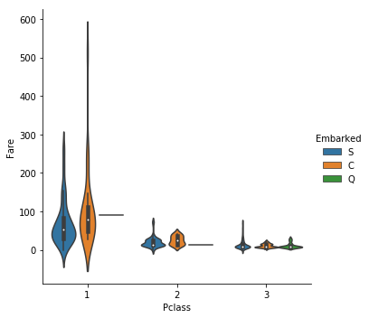

メモ帳
1. データのロード
df_train = pd.read_csv("train.csv")
df_test = pd.read_csv("test.csv")
2. null値の確認
>>df_train.isnull().sum()
Out[5]:
......
Age 177
......
Cabin 687
Embarked 2
dtype: int64
>>df_test.isnull().sum()
Out[6]:
......
Age 86
......
Fare 1
Cabin 327
......
dtype: int64
3. Null値のFill
3.1 df_test.Fare:同じTicketのFareでFill
>>ticket = df_test[df_test.Fare.isna()]["Ticket"]
>>idx = ticket.index.values[0]
>>df_test[df_test.Ticket.str.contains(ticket[idx])]["Fare"]
Out[104]:
152 NaN
284 20.2125
Name: Fare, dtype: float64
>>df_test.Fare = df_test.Fare.fillna(20.2125)
3.2 Embarked："C"でFill
>>df_train[df_train.Embarked.isna()]
Out[106]:
PassengerId Survived Pclass ...... Sex Age SibSp Parch Ticket Fare Cabin Embarked
61 62 1 1 ...... female 38.0 0 0 113572 80.0 B28 NaN
829 830 1 1 ...... female 62.0 0 0 113572 80.0 B28 NaN

3.3 Age: 同じTitleの平均値でFill ※Title: Mr./Mrs./Miss....
>>def get_title(x):
idx_s = x.find(",")
idx_e = x.find(".")
return (x[idx_s + 1 : idx_e + 1]).strip()
>>df_train["Title"] = df_train.Name.transform(get_title)
>>df_test["Title"] = df_test.Name.transform(get_title)
>>df_train_cpy = df_train.copy()
>>df_train_cpy = df_train_cpy.drop("Survived", axis=1)
>>df_train_cpy = df_train_cpy.set_index("PassengerId")
>>df_test_cpy = df_test.copy()
>>df_test_cpy = df_test_cpy.set_index("PassengerId")
>>data = pd.concat((df_train_cpy, df_test_cpy), axis = 0)
>>gp = data.groupby("Title")
>>age_mean = gp.Age.mean()
>>train_age_nulls = df_train.loc[df_train.Age.isna(), "Title"]
>>test_age_nulls = df_test.loc[df_test.Age.isna(), "Title"]
>>df_train.loc[df_train.Age.isna(), 'Age'] = age_mean.loc[train_age_nulls].values
>>df_test.loc[df_test.Age.isna(), 'Age'] = age_mean.loc[test_age_nulls].values
3.4 Cabin: Skipped.... :(
Cabinの先頭文字のみで、統計してみて、関係しているように見えます。
ただし、Nameや、Ticketから、Fillできそうですが、省略...
 4. 学習
4. 学習
4.1 学習方法
Linear Model VS RandomForestClassifier VS SVC VS GradientBoostingClassifier
4.2 データ項目
4.2.1 "Pclass", "Age", "Sibsp", "Parch", "Fare", "Sex"(get_dummies化), "Embarked"(get_dummies化)
4.2.2 "Pclass", "Age", "Sibsp", "Parch", "Fare", "Sex"(get_dummies化), "Embarked"(get_dummies化), "Title"(get_dummies化)
※ Titleのget_dummies後、trainと、testのcolumns数が異なることになって、columnの増加処理(default value = 0)が必要。
4.3 結果
4.3.1 RandomForestClassifierと、GradientBoostingClssifierが、よい結果 (最大：0.77511 vs 最大0.72)
4.3.2 Titleが学習対象にするほうが、よい結果
4.3.2 RandomForestClassifierのmax_depthを調整して、最大 0.78947 ( max_depth = 11) :(